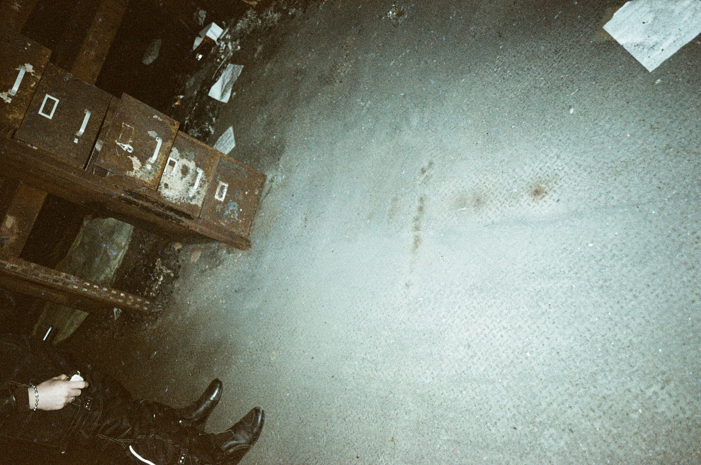
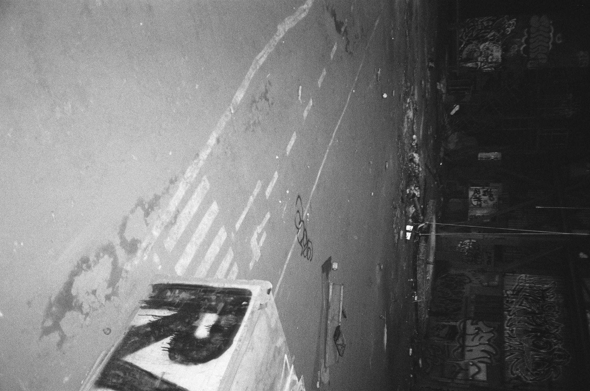
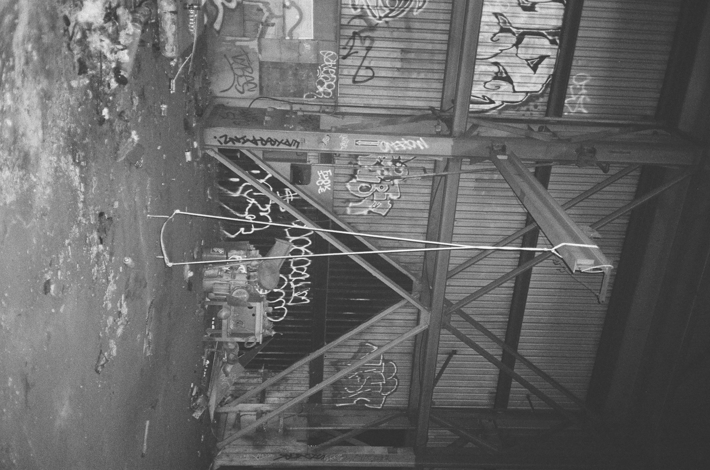
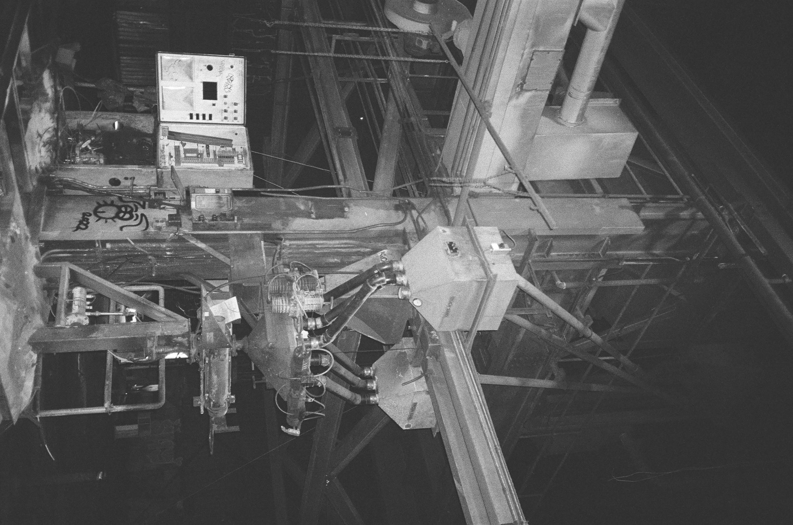
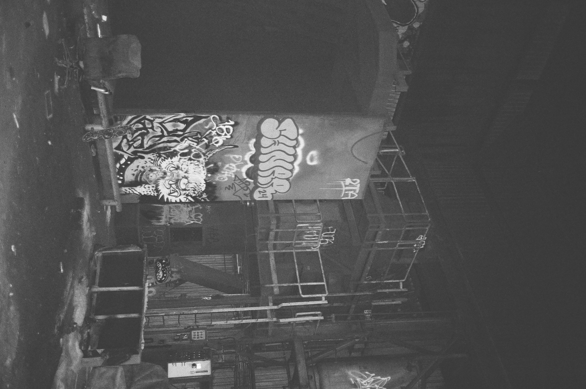
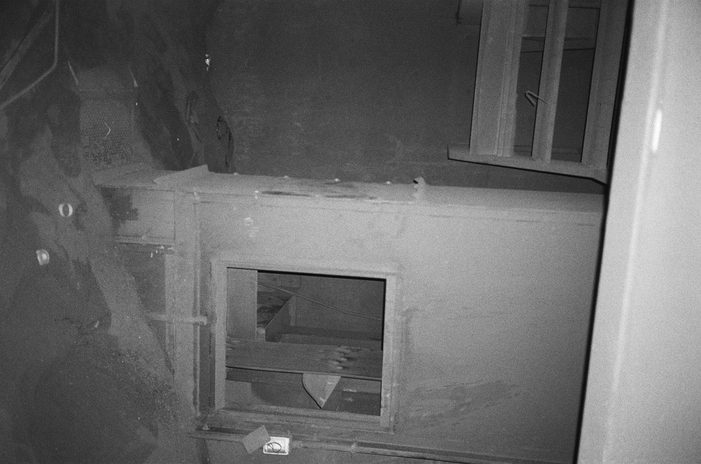

Approximate area only. Exact locations aren't shared.
Pacific Steel Casting sits right next to I-80 in West Berkeley. You've probably driven past it a hundred times. It was a steel foundry founded in 1934, and at one point one of the biggest in the country. It went bankrupt in 2014 and finally shut down for good around 2018, after 84 years.
Inside it's still full of the huge machinery that was too big to bother moving: presses, crane cabs, rails, and that iconic yellow wheel at the end of the hall.
[Dictate: getting in, and what it was like]


And on film:










